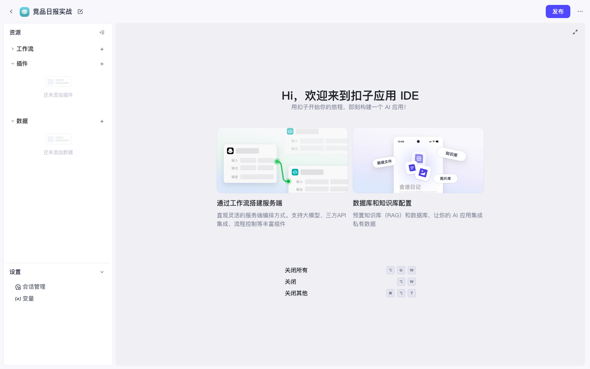
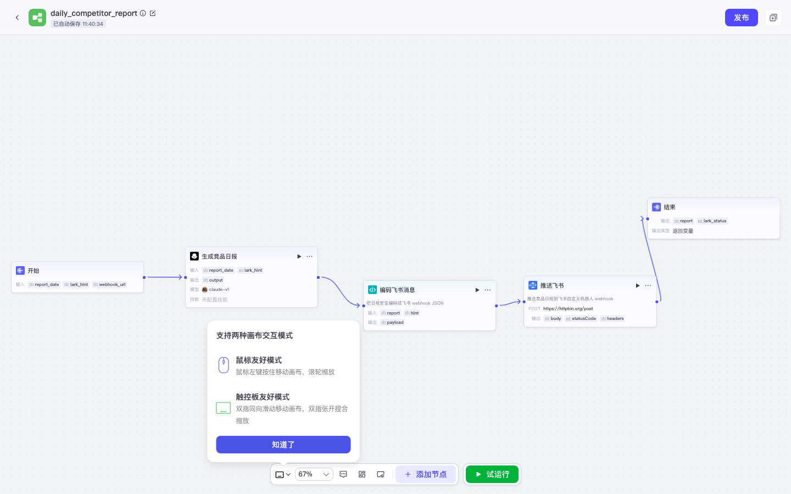

Coze 实战 · 第6课 · P01 · 核心课 · ≈60 min · 开源可用
P01 · 竞品日报推送飞书（工作流）
本系列最重要的一课：在应用「竞品日报实战」里编排工作流 daily_competitor_report，
用 LLM 生成四所交易所竞品日报 → Python Code 安全编码 JSON → HTTP 推送到飞书（或 httpbin 演示）。
前置：已完成 P07 应用 IDE（应用和工作流空壳已建好）。
★
总流程与最终节点链
开始3 个输入
LLM生成日报
CodeJSON 编码
HTTPPOST 推送
结束输出结果
节点链（必须按此顺序连线）： 开始 → 生成竞品日报（大模型）→ 编码飞书消息（代码 Python）→ 推送飞书（HTTP）→ 结束
| 本课产物 | 固定命名（照抄） |
|---|---|
| 应用 | 竞品日报实战 |
| 工作流英文名 | daily_competitor_report（仅字母数字下划线） |
| 开始节点输出 | report_date、lark_hint、webhook_url |
0
前置条件
| 项 | 要求 | 怎么检查 |
|---|---|---|
| 服务 | http://localhost:8888 可访问 | 浏览器能打开登录页 |
| 启动 | coze-studio 根目录 make web 或 make debug | Docker 容器健康 |
| 模型 | 管理后台至少启用 1 个大模型 | /admin/#model-management 有绿色已启用 |
| 应用 | 已创建 竞品日报实战 | P07 或本课第 2 步补做 |
| 工作流 | 应用内已有 daily_competitor_report | 左侧树能看到，画布有开始→结束 |
开源版没有内置 Cron 定时触发。本课先用手动「试运行」验收；「每天早上 9 点自动推」在 P08 用外部 crontab 调 OpenAPI 实现。
1
登录并进入项目开发
- 打开
http://localhost:8888/sign - 输入邮箱密码 → 点 登录
- 左侧 工作空间 → Personal Space → 项目开发
- 地址变为 /space/<space_id>/develop

图 1：登录页 — 用自建账号登录本地 Coze。

图 2：项目开发列表 — 应能看到「竞品日报实战」应用卡片。
2
打开应用「竞品日报实战」
若 P07 已创建：直接点卡片进入。若还没有，按下列步骤补建。
2.1 补建应用（仅当列表里没有时）
- 项目开发页右上角 + 创建
- 选右侧 创建应用（不是智能体）
- 名称：
竞品日报实战 - 介绍：
每日生成四所交易所竞品日报并推送飞书（教程演示） - 点 创建 → 自动进入应用 IDE
2.2 从项目开发进入应用 IDE
- 在项目开发列表，单击「竞品日报实战」卡片
- 进入应用 IDE，URL 含
project-ide

图 3：从项目开发页点进应用 IDE 的路径示意。
3
打开工作流 daily_competitor_report
3.1 补建工作流（仅当左侧树里没有时）
- 应用 IDE 左侧 工作流 旁点 +
- 名称（英文）：
daily_competitor_report - 描述（中文）：
每日竞品日报生成并推送飞书 - 确认 → 进入画布
工作流名禁止中文❌
每日竞品日报 会红字报错。✅ 只用 daily_competitor_report。3.2 打开已有工作流
- 左侧树 工作流 → daily_competitor_report，单击
- 中间出现画布，默认 开始 连 结束

图 4：工作流画布 — 接下来在「开始」和「结束」之间插入三个节点。
4
配置「开始」节点 — 三个输入参数
作用：试运行和 API 调用时由你传入「今天日期、群备注、Webhook 地址」。这些值用
{{变量名}} 传给下游 LLM。- 画布上单击「开始」节点
- 右侧配置面板找到 输入参数 / 输出变量 区域
- 点 + 添加，逐个新增下表三行（类型均选
string字符串）：
| 变量名（英文，严格一致） | 必填 | 说明 | 试运行示例值 |
|---|---|---|---|
report_date | 是 | 日报日期，注意是 date 不是 data | 2026-07-16 |
lark_hint | 是 | 飞书群备注，会出现在消息前缀 | 增长情报群 |
webhook_url | 否 | Webhook 地址（也可直接写死在 HTTP 节点） | https://httpbin.org/post |
变量名必须和本表完全一致。下游 LLM 提示词写
{{report_date}}，若你写成 report_data 会取不到值。✅ 验收：开始节点输出列表里有上述三个变量名。
5
添加「大模型」节点 — 生成竞品日报
- 画布空白处右键，或点工具栏 + 添加节点
- 选 大模型 / LLM
- 把新节点拖在「开始」和「结束」之间
- 连线：从「开始」右侧圆点拖到 LLM 左侧；再从 LLM 右侧拖到「结束」左侧（稍后还要改连到 Code）
- 单击 LLM 节点，右侧配置：
- 节点名称：
生成竞品日报 - 模型：选管理后台已启用的模型（如 claude / gpt / deepseek）
- 系统提示词：可留空或写「你是加密货币交易所竞品分析师」
- 用户提示词：见下方代码块，完整粘贴
- 节点名称：
- 输出变量：默认
output即可，后面 Code 节点会引用
请生成今日竞品日报。报告日期：{{report_date}}。飞书群备注：{{lark_hint}}。
覆盖交易所：Binance、Bybit、Bitget、Gate.io。
输出结构（Markdown）：
1. 一句话摘要
2. 四所交易所各一段：活动 / 上新 / 费率 / 推广动态
3. 对 BitMart 的启示（2～3 条）
若无实时检索能力，请基于公开行业认知生成，并在文末标注「部分内容为模型推断」。变量引用：双花括号
{{report_date}} 和 {{lark_hint}} 会在运行时被开始节点的输入替换。这是工作流里最常用的传参方式。Tokens=0 / 模型报错去 /admin/#model-management 检查模型是否启用、API Key 是否配置。
6
添加「代码」节点（Python）— 编码飞书 JSON
为什么必须有 Code 节点？
飞书自定义机器人要求 POST 的 Body 是合法 JSON：
日报正文含换行、双引号、反斜杠。若在 HTTP 节点用 JSON 模板直接塞 LLM 长文本，不会自动转义，飞书返回
正确做法：Python
飞书自定义机器人要求 POST 的 Body 是合法 JSON：
{"msg_type":"text","content":{"text":"..."}}。日报正文含换行、双引号、反斜杠。若在 HTTP 节点用 JSON 模板直接塞 LLM 长文本，不会自动转义，飞书返回
400 / errcode 19001 param error。正确做法：Python
json.dumps() 生成整段 JSON 字符串 → HTTP 节点用 RAW_TEXT 原样发送。- 添加节点 → 选 代码 → 语言 Python 3
- 节点名称：
编码飞书消息 - 放在 LLM 和「结束」之间，重新连线：开始→LLM→Code→结束（HTTP 还没加，先连结束占位）
- 配置输入（从上游映射）：
report← 引用生成竞品日报.output（或 LLM 节点的 output 变量名）hint← 引用开始.lark_hint
- 配置输出：新增
payload（string 类型） - 代码编辑区全部替换为下方 Python：
import json
async def main(args: Args) -> Output:
params = args.params
report = params.get('report') or ''
hint = params.get('hint') or ''
# 飞书文本前缀：含「竞品日报」可过关键词安全设置
text = '【竞品日报】' + str(hint) + '\n\n' + str(report)
# 飞书单条文本建议不超过约 4000 字，保守截断
if len(text) > 3500:
text = text[:3500] + '\n...(内容过长已截断)'
payload = json.dumps({
'msg_type': 'text',
'content': {'text': text}
}, ensure_ascii=False)
ret: Output = {'payload': payload}
return ret| 代码做了什么 | 对应飞书要求 |
|---|---|
json.dumps(..., ensure_ascii=False) | 中文不变成 \uXXXX，且自动转义引号换行 |
前缀 【竞品日报】 | 机器人若开「自定义关键词」必须含该词 |
| 截断 3500 字 | 避免超长被飞书拒绝 |
输出 payload | 给 HTTP 节点当 RAW_TEXT 整体发送 |
跳过 Code 直接 HTTP 拼 JSON 的后果
试运行 HTTP 节点可能显示 200（httpbin 较宽松），但换真飞书后几乎必现 400 / 19001。这是本课最关键的工程经验。
7
添加「HTTP」节点 — POST 推送
- 添加节点 → HTTP 请求
- 节点名称：
推送飞书 - 重新连线：开始 → LLM → Code → HTTP → 结束
- 单击 HTTP 节点，右侧逐项填写下表：
| 配置项 | 试运行（演示） | 上线（真飞书） |
|---|---|---|
| Method | POST | |
| URL | https://httpbin.org/post | https://open.feishu.cn/open-apis/bot/v2/hook/<你的token>国际版用 open.larksuite.com |
| 鉴权 Auth | 关闭（Webhook 靠 URL 里的 token） | |
| Headers | 新增一行：Content-Type = application/json | |
| Body 类型 | RAW_TEXT（也叫 Raw / 纯文本） | |
| Body 内容 | 引用变量 编码飞书消息.payload（即 Code 节点输出） | |
RAW_TEXT 是关键：Body 已经是 Code 生成的完整 JSON 字符串，不要再选「JSON 模板」然后手写
{"text": "{{output}}"}——那样又破坏转义。演示阶段务必先用
httpbin.org/post：它会把收到的 JSON 原样 echo 回来，方便确认 payload 结构正确，且不需要真飞书 token。7.1 httpbin 返回长什么样算成功？
{
"json": {
"msg_type": "text",
"content": { "text": "【竞品日报】增长情报群\n\n..." }
}
}HTTP 节点输出里 statusCode 应为 200。
8
配置「结束」节点 — 暴露结果
- 单击「结束」节点
- 在输出变量里 + 添加：
report← 引用生成竞品日报.outputlark_status← 引用推送飞书.statusCode（或 HTTP 响应码字段名）
- 点顶部或画布 保存

图 5：完整画布 — 开始 → 生成竞品日报 → 编码飞书消息 → 推送飞书 → 结束（实录）。
✅ 验收：五条节点全部绿色连线，无孤立节点；保存无报错。
9
试运行 — 填写示例参数
作用：不发布也能端到端跑一遍，确认 LLM → Code → HTTP 全通。
- 画布右上角或右侧栏点 试运行（或 ▶ 图标）
- 弹出参数表单，逐字填写：
| 字段 | 填入（复制） |
|---|---|
report_date | 2026-07-16 |
lark_hint | 增长情报群 |
webhook_url | https://httpbin.org/post（若开始节点有该字段；URL 也可只配在 HTTP 节点） |
- 点 运行 / 开始运行
- 等待每个节点变绿（LLM 可能 1～3 分钟，视模型速度）
- 点开各节点查看输入输出；重点看 HTTP 节点
statusCode: 200 - 结束节点应能看到完整
reportMarkdown 和lark_status: 200

图 6：试运行侧栏 — 三个开始参数 + 运行按钮。
✅ 实录通过标准：全节点成功 ·
lark_status: 200 · 结束节点 report 含四所交易所内容 · Token 消耗 > 0。httpbin 200 但飞书群没消息正常——你还在演示 URL。第 10 步换真 webhook。
10
换成真实飞书 Webhook
- 飞书桌面端 → 进入目标群 → 右上角 设置
- 群机器人 → 添加机器人 → 自定义机器人
- 名称随意，安全设置若开「自定义关键词」，填
竞品日报（与 Code 前缀一致） - 复制 Webhook 地址，形如：
https://open.feishu.cn/open-apis/bot/v2/hook/xxxxxxxx-xxxx-xxxx-xxxx-xxxxxxxxxxxx - 回到 Coze 画布 → 单击 推送飞书 HTTP 节点
- 把 URL 从 httpbin 换成刚复制的飞书 Webhook
- 保存 → 再次 试运行（参数同上，report_date 改成今天）
- 飞书群应收到带
【竞品日报】增长情报群前缀的长消息
安全：Webhook URL 等同群写权限。不要提交到 Git 公开仓库；泄露后请在飞书机器人设置里「重置地址」。
✅ 验收：飞书群出现日报消息，且 HTTP 节点 statusCode 为 200。
11
关于「每日自动」— 无内置 Cron
事实：开源 Coze Studio 工作流编辑器没有内置定时触发节点（代码注释里写 will support soon）。所以「竞品日报」的「每日」要靠外部调度。
- 本课目标：手动试运行跑通 — 已完成
- 若要每天 9:00 自动推：需先 发布应用，再用 crontab 调 OpenAPI
- 具体 curl、PAT Token、workflow_id 获取 → 见 P08 发布 · PAT · OpenAPI
# P08 会详讲，这里仅预览（每天 9:00）
0 9 * * * curl -sS -X POST 'http://localhost:8888/v1/workflow/run' \
-H 'Authorization: Bearer <你的PAT>' \
-H 'Content-Type: application/json' \
-d '{"workflow_id":"<工作流ID>","parameters":{"report_date":"'"$(date +%F)"'","lark_hint":"增长情报群"}}' \
>> /tmp/coze-comp-daily.log 2>&1工作流 ID：打开画布时 URL 末尾数字，如 .../workflow/7662919178956832768
!
踩坑清单（速查表）
| 现象 | 原因 | 处理 |
|---|---|---|
| 工作流名红色报错 | 用了中文名 | 改成 daily_competitor_report |
LLM 变量是字面量 {{report_date}} | 开始节点未定义或名写错 | 检查开始输出是否 report_date |
推送飞书 400 / 19001 | 无 Code 节点，JSON 未转义 | 按第 6 步加 Python + RAW_TEXT |
| HTTP Body 选了 JSON 模板 | 长文本再次破坏 JSON | 改 Body 类型为 RAW_TEXT，引用 payload |
| Tokens = 0 | 模型未启用 / Key 无效 | 管理后台检查模型配置 |
| httpbin 200 群无消息 | 仍是演示 URL | HTTP URL 换飞书 Webhook |
| 飞书无消息但 HTTP 200 | 机器人关键词过滤 | 文案含「竞品日报」或关关键词限制 |
| 想每天自动跑 | 无内置 cron | P08 外部 crontab + OpenAPI |
和智能体分工：临时追问「对比 Binance 和 Bybit」→ 用 P02 智能体；每日例行进群 → 本工作流 + P08 定时；要实时资讯 → 再加搜索插件（P05，需鉴权）。
- □ 五节点链：开始 → LLM → Code → HTTP → 结束
- □ 开始输出：report_date / lark_hint / webhook_url
- □ Code：json.dumps + 3500 截断 + 【竞品日报】前缀
- □ HTTP：POST + RAW_TEXT + Content-Type application/json
- □ 试运行 httpbin 200，换飞书后群收到消息
全部完成 → 继续 P03 为智能体挂载技能（第7课），或跳 P08 学发布与定时。